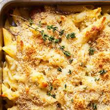
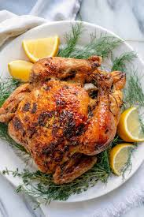
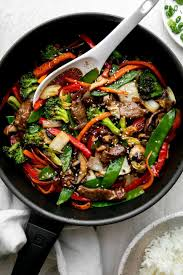

Enjoy these satisfying and flavorful dinner options!

End your day with a savory Pasta Primavera for dinner.1. Pasta Primavera Ingredients: 12 oz pasta (penne, farfalle, or fusilli) 1 zucchini, sliced 1 yellow squash, sliced 1 bell pepper, sliced 1/2 cup cherry tomatoes, halved 1/2 cup peas (frozen or fresh) 2 cloves garlic, minced 1/4 cup olive oil 1/4 cup grated Parmesan cheese 1/4 cup fresh basil, chopped Salt and pepper to taste Red pepper flakes (optional) Instructions: Cook the pasta according to the package instructions until al dente. Drain and set aside. In a large pan, heat olive oil over medium heat. Add the minced garlic and sauté for about 1 minute. Add the zucchini, squash, and bell pepper. Cook for about 5 minutes until tender but still crisp. Add the peas and cherry tomatoes, and cook for another 2 minutes. Toss the cooked pasta into the pan with the vegetables. Stir in Parmesan cheese, basil, salt, and pepper. For a little heat, add a pinch of red pepper flakes. Serve hot, garnished with more Parmesan and fresh basil.

Delicious Roast Chicken with herbs and spices.2. Roast Chicken with Herbs and Spices Ingredients: 1 whole chicken (3-4 lbs) 4 tbsp olive oil 4 cloves garlic, minced 1 tbsp fresh rosemary, chopped (or 1 tsp dried) 1 tbsp fresh thyme, chopped (or 1 tsp dried) 1 tbsp fresh parsley, chopped 1 tsp paprika 1 lemon, cut in half Salt and pepper to taste Instructions: Preheat the oven to 425°F (220°C). In a small bowl, mix together the olive oil, garlic, rosemary, thyme, parsley, paprika, salt, and pepper. Pat the chicken dry with paper towels. Rub the herb and spice mixture all over the chicken, including under the skin and inside the cavity. Place the lemon halves inside the cavity of the chicken. Tie the chicken legs together with kitchen twine and tuck the wings under the body. Roast the chicken in the oven for 1 hour to 1 hour 15 minutes, or until the internal temperature reaches 165°F (75°C) when checked with a meat thermometer. Let the chicken rest for 10-15 minutes before carving. Serve with roasted vegetables or mashed potatoes on the side.

Healthy and colorful Stir-Fry packed with vegetables.3. Stir-Fry Packed with Vegetables Ingredients: 1 tbsp sesame oil (or vegetable oil) 1 bell pepper, sliced 1 carrot, julienned 1 zucchini, sliced 1/2 cup broccoli florets 1/2 cup snow peas 1/4 cup soy sauce 2 tbsp hoisin sauce (optional) 1 tbsp rice vinegar 1 tbsp ginger, minced 2 cloves garlic, minced 1 tbsp sesame seeds (optional) Cooked rice or noodles, for serving Instructions: Heat a large wok or skillet over medium-high heat. Add the sesame oil. Once the oil is hot, add the minced garlic and ginger, and sauté for 30 seconds until fragrant. Add the bell pepper, carrot, zucchini, and broccoli to the pan. Stir-fry for about 5 minutes, or until the vegetables start to soften. Add the snow peas and stir-fry for another 2 minutes. In a small bowl, whisk together the soy sauce, hoisin sauce (if using), and rice vinegar. Pour the sauce over the vegetables in the pan and stir well. Cook for another 2-3 minutes, allowing the sauce to thicken slightly and coat the vegetables. Sprinkle with sesame seeds, if desired, and serve immediately over rice or noodles.